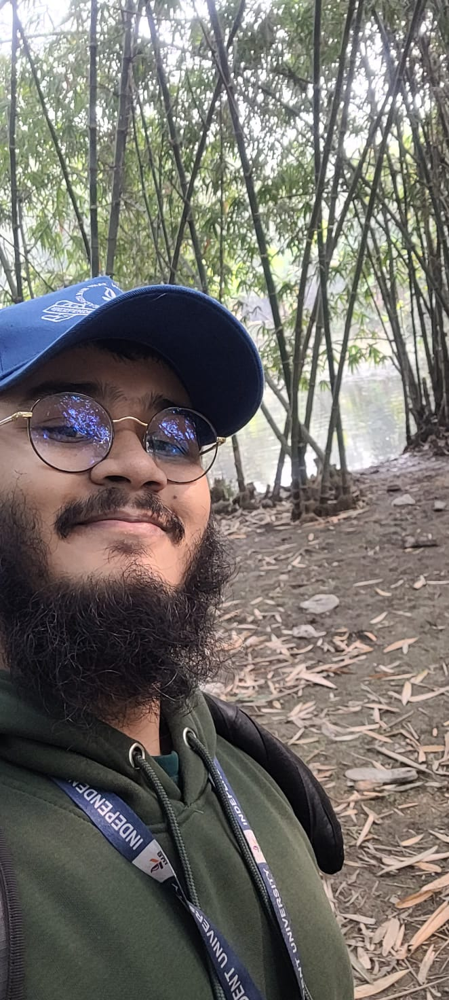

Undergrad @ Independent University, Bangladesh |senior project student CCDS.AI | looking for MS-research, internships
I am a final year CS(Computer Science) student at Independent University, Bangladesh, interested in AI research, computer vision, and transformer models. My research mainly focus on improving performance vision language models and other down stream tasks of vision models. I have worked on various coures porject including AWS server based package tracking system, VLM based remote sensing segmentation using clip and CNN architecture,food court management systems on OOP course,A Market Information System for Farmers on DBMS course. Currenty doing my final year project which is an alaysis of social and economical indexes usinf temporal LULC(land use land cover) and NTL(Nighttime Light) on heavy industrial areas of Bangladesh supervised by Dr. AKM Mahbubur Rahman and Dr. Amin Masud Ali . I also colaborate with other RAs at CCDS.AI. Current CGPA is 3.82 out of 4.
personal Email: saifnasim256@gmail.com
university Email: 2321063@iub.edu.bd
GitHub: github.com/SaifNasim